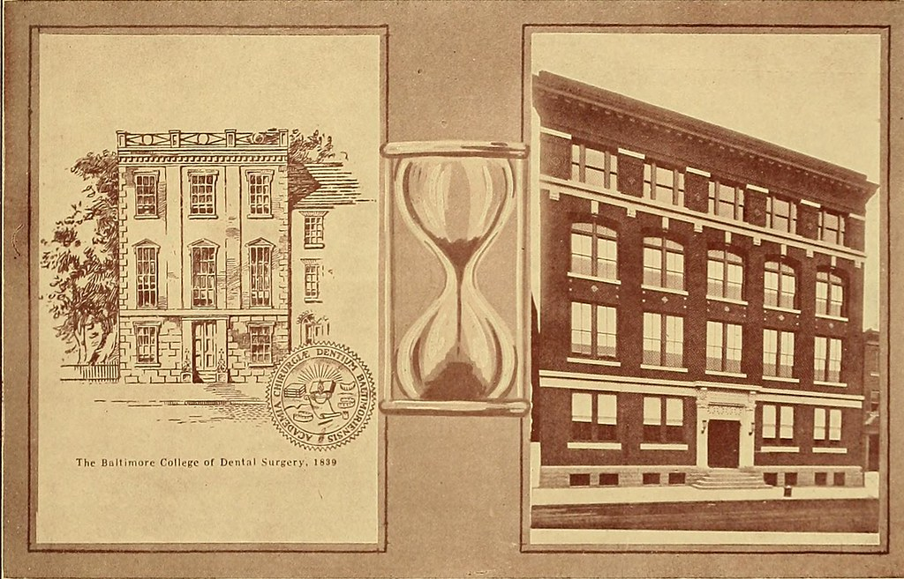
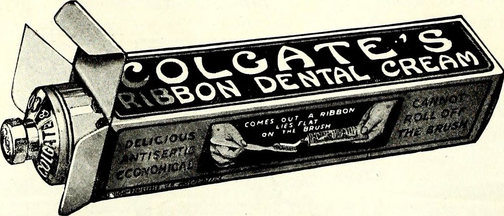
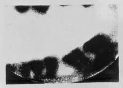
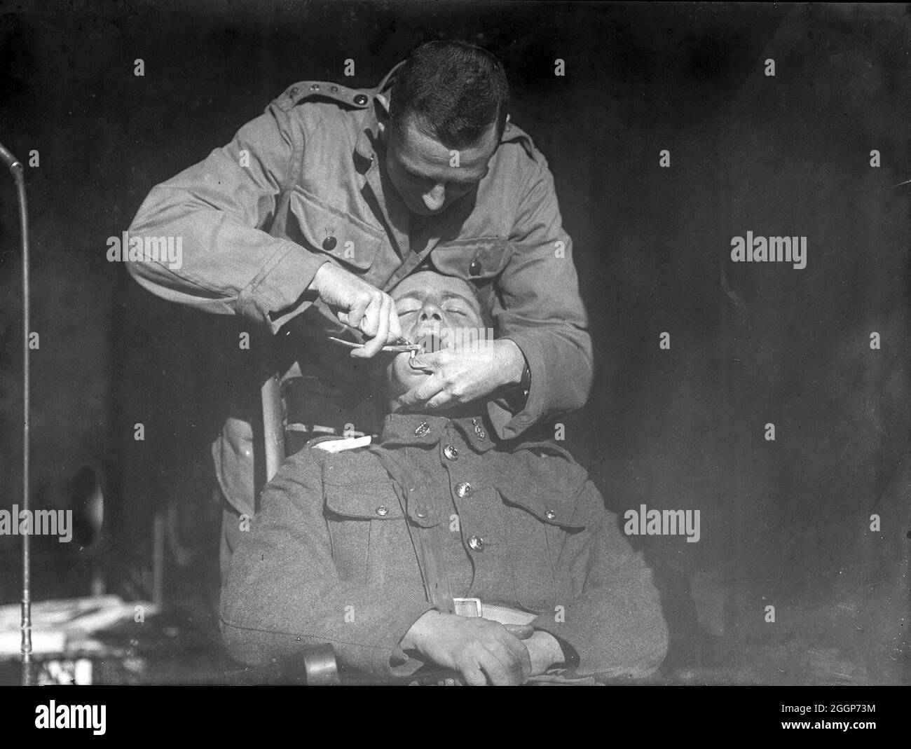
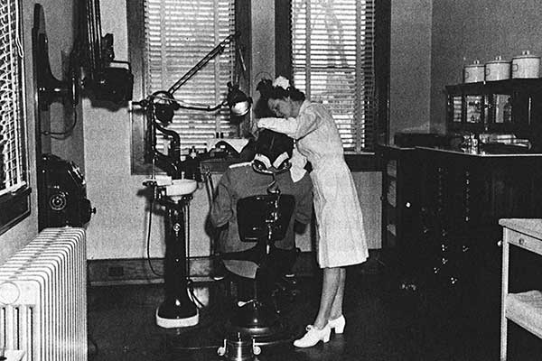

Dentistry is a branch of medicine that deals with teeth, gums and the mouth and has been around since the ancient Egyptians (7500 BC). Dentistry uses technology to provide better patient care and is constantly changing as new advances are being made. This site will examine dental innovations of the past and possible future. Below you can find some important events in Dental History!
2600BC
Hesy-Ra was an ancient Egyptian scribe credited as being the first known dentist after treating tooth infenctions.

1723
Pierre Fauchard published a book called "The Surgeon Dentist, a Treatise on Teeth" which was the first source on specific dental care. He became credited as the Father of Modern Dentistry.

1840
Baltimore College of Dental Surgery opened and became the first dental school.

1873
Colgate began to mass produce toothpaste.

1896
Dr Otto Walkhoff created the first dental x-ray.

1911
The U.S. Army Dental Corps is created.

1913
Fones Clinic For Dental Hygienists in Bridgeport, Connecticut became the world's first school for dental hygienists.

1930
The American Board of Orthodontics was created and became the first dental specialty.
1957
John Borden created a modern high speed dental drill which spined at a speed of 300,000 RPM.
1960
It became common practice for a dentist and dental assistant to work together during a patient visit. This made treatments faster and more efficent.